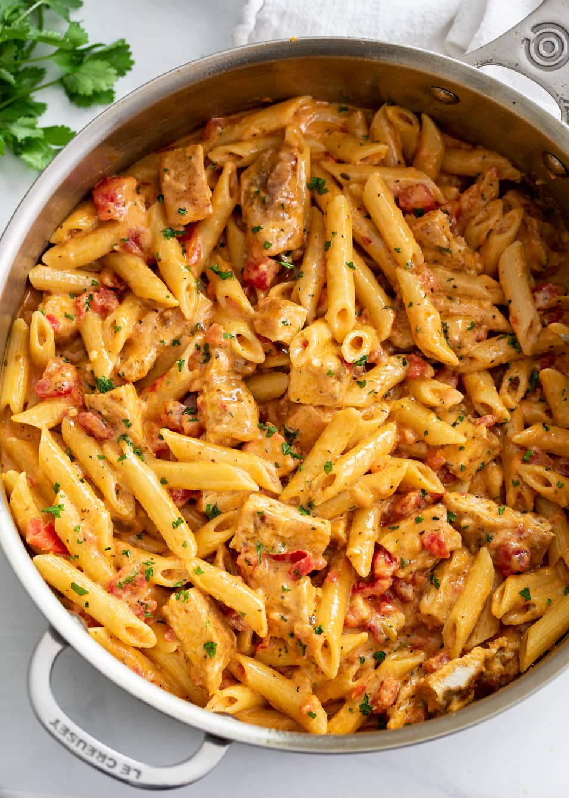

Cajun Chicken Pasta

Chicken
- 1 large boneless skinless chicken breast
- 1 teaspoon Cajun seasoning
- 2 tablespoons flour
- 1-2 tablespoons olive oil
Pasta/Sauce
- ½ cup chicken broth
- 3 tablespoons butter
- 3 cloves garlic, minced
- 2 tablespoons flour
- 1 tablespoon tomato paste
- 1 ¼ cups half and half, half cream half milk
- ¾ cups chicken broth
- 1 teaspoon honey
- 2 tablespoons hot sauce
- 10 oz. Rotel tomatoes with green chilies, drained
- ½ cup mozzarella cheese, shredded
- ½ cup cheddar cheese, shredded
- ½ lb. penne
Seasonings
- 1 ½ teaspoons Cajun seasoning
- 1 teaspoon brown sugar
- ½ teaspoon EACH: onion powder, dried basil, oregano, mustard powder
- 1 pinch EACH: red pepper flakes, cayenne pepper
1. Prep Work: Combine the half and half (1 ¼ cups), chicken broth (¾ cup), honey (1 tsp), hot sauce (2 T), and seasonings (1 ½ tsp Cajun Seasoning; 1 tsp brown sugar; ½ tsp EACH: onion powder, dried basil, oregano, mustard powder; 1 pinch EACH: red pepper flakes, cayenne pepper) in a medium measuring cup with a spout and set aside. Measure remaining ingredients before beginning.
2. Place a measuring cup in the colander you’ll use to drain the pasta, this will remind you to save some of the pasta water when that step arrives.3. Cook the Chicken: Cut the chicken in half lengthwise to create 2-3 thinner slices. Pat dry and season each side with Cajun seasoning, then sprinkle with flour and rub it into the surface of each side.
4. Heat olive oil over medium-high heat and add the chicken. Sear on each side for about 4-5 minutes, until a golden crust has developed. Set aside and let it rest for 10 minutes, then cut into strips.
5. Begin heating a pot of salted pasta water while you prepare the sauce as outlined below.
6. Add the chicken broth (½ cup) to the same skillet that you used to cook the chicken and set the heat to medium. Let it reduce by half, about 3 minutes. Use a silicone spatula to “clean” the bottom of the pan while it simmers, this will add flavor to the sauce.
7. Add the butter (3 Tbs) and garlic (3 cloves) and cook for 1 more minute. Stir in the flour (2 Tbs) and cook for 1-2 minutes. Add the tomato paste (1 Tbs) and stir to combine.
8. Add the combined half and half mixture in small splashes, stirring continuously. Bring to a gentle boil, then reduce heat to low. Add the drained tomatoes and simmer gently, (uncovered), while you cook the pasta (½ lb) to al dente according to package instructions. Drain once cooked and reserve 1 cup of pasta water.
9. Gradually sprinkle in the cheese (½ cup each: cheddar and mozzarella) over low heat, stirring continuously.
10. Add the drained pasta and stir to combine. Add the chicken and let it warm through for 2 minutes.
11. If desired, add a little pasta water. (This adds a creamy finish and helps the pasta cling onto the sauce.)
12. Sprinkle with cilantro (if desired) and serve!